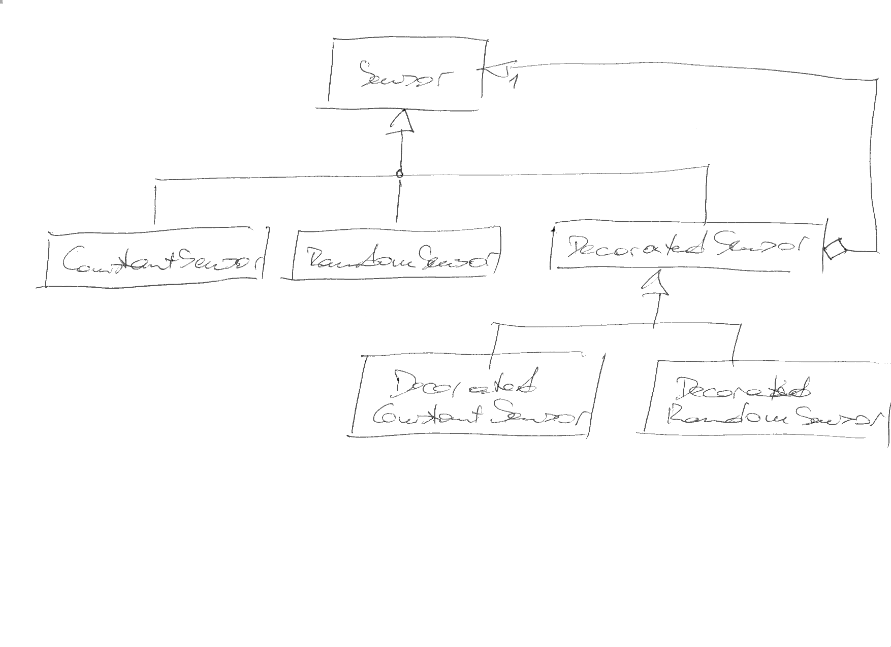
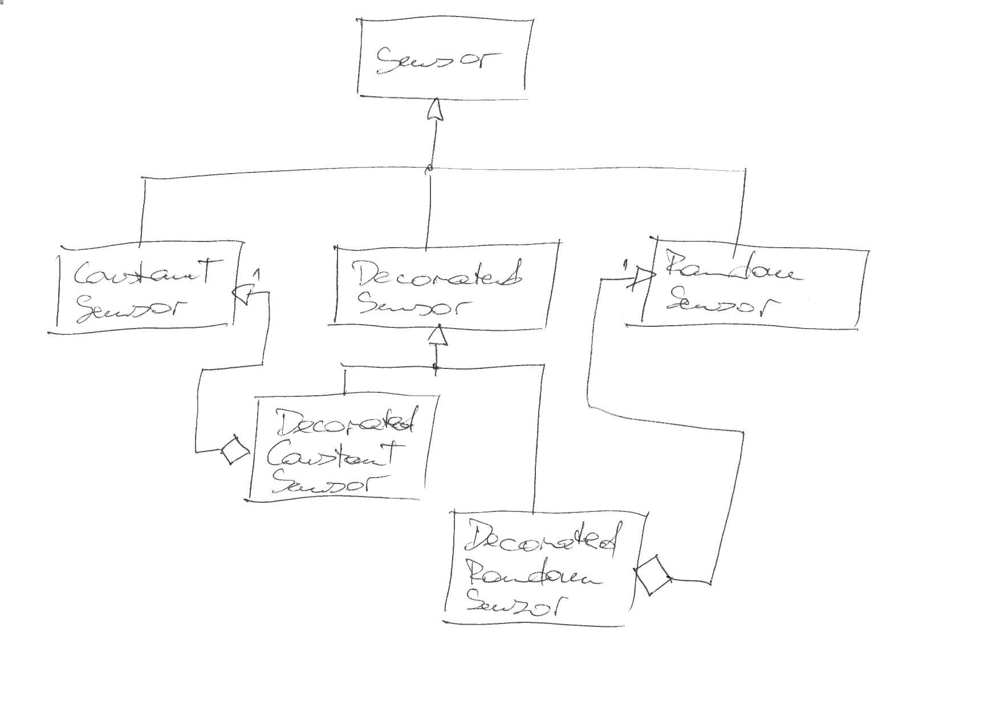

Decorator¶
Problem¶
Modifying an interface to add functionality is inappropriate
… maybe because there is no consensus that the functionality should be part of the interface
… maybe simply because the interface is not in your hands
⟶ add small wrapper classes with the added functionality
Instances of wrapper classes should be usable as instances of the original interface
Solution¶
Introduce a wrapper class that contains an object of the original interface.
The wrapper class implements the original interface. In other words, objects of the wrapper class can be used as object that implement the original interface.
Additionally (that is the point), the wrapper class implements the functionality that cannot be part of the original interface.
Variant 1: Aggregate Base Class Objects¶
{kind=link}
Variant 2: Aggregate Conrete Class Objects¶
{kind=link}
Exercise¶
Motivation¶
Implement decorators that add the following functionality to all
classes in our Sensor hierarchy:
A
nameattributeIntention: every sensor in a system should carry a name with it
“We want it simple!”
A
descriptionattributeIntention: every sensor should be able to describe what it does and what its configuration is
“We want it debuggable!”
Step 1: Realize Current Situation¶
The original interface is used in current code. It is that current code that must be left unmodified - ideally, current code must continue to work even without recompilation.
A somewhat contrived (but representative) example of “current code” is
the average() function that computes an average value across a set
of sensors.
/trainings/material/soup/cxx-code/design-patterns-decorator/tests/decorator-suite-starting-point.cpp¶#include <gtest/gtest.h>
#include <sensor-const.h>
#include <sensor-utils.h>
TEST(decorator_suite, average_with_base_sensor)
{
ConstantSensor c1(42);
ConstantSensor c2(666);
std::vector<Sensor*> sensors{&c1, &c2};
ASSERT_FLOAT_EQ(average(sensors.begin(), sensors.end()), 354);
}
Step 2: Decorate ConstantSensor ⟶ DecoratedConstantSensor¶
Create a wrapper that adds the required name and description
attributes, in a way that makes the following test pass.
The intermediate class DecoratedSensor enables the proponents of
the added functionality to attach their own debugging/diagnostics code
to the system - without any modification/pollution of existing
code.
/trainings/material/soup/cxx-code/design-patterns-decorator/tests/decorator-suite-const-sensor-added-functionality.cpp¶#include <gtest/gtest.h>
#include <sensor-decorated-const.h>
TEST(decorator_suite, decorated_sensor_const_added_functionality)
{
DecoratedConstantSensor c("my-funny-const-sensor", 38.6);
ASSERT_EQ(c.description(), "ConstantSensor(38.6)"); // <--- appears to be a DecoratedSensor
ASSERT_EQ(c.name(), "my-funny-const-sensor"); // -"-
DecoratedSensor* ds = &c; // <--- is-a DecoratedSensor
ASSERT_EQ(ds->description(), "ConstantSensor(38.6)"); // <--- used as-a DecoratedSensor
ASSERT_EQ(ds->name(), "my-funny-const-sensor"); // <--- -"-
}
Step 3: Decorate RandomSensor ⟶ DecoratedRandomSensor¶
Same as step 2, only with RandomSensor.
/trainings/material/soup/cxx-code/design-patterns-decorator/tests/decorator-suite-random-sensor-added-functionality.cpp¶#include <gtest/gtest.h>
#include <sensor-decorated-random.h>
TEST(decorator_suite, decorated_sensor_random_added_functionality)
{
DecoratedRandomSensor r("my-funny-random-sensor", 33.3, 40.5);
ASSERT_EQ(r.description(), "RandomSensor(33.3, 40.5)"); // <--- appears to be a DecoratedSensor
ASSERT_EQ(r.name(), "my-funny-random-sensor"); // -"-
DecoratedSensor* ds = &r; // <--- is-a DecoratedSensor
ASSERT_EQ(ds->description(), "RandomSensor(33.3, 40.5)"); // <--- used as-a DecoratedSensor
ASSERT_EQ(ds->name(), "my-funny-random-sensor"); // <--- -"-
}
Step 4: Verify That DecoratedConstantSensor Can Be Used As Sensor¶
The point in adding the DecoratedSensor sub-hierarchy to the
system is to extend existing functionality without any
modification thereof. In that sense, it must be possible to use a
decorator object as-a original object.
/trainings/material/soup/cxx-code/design-patterns-decorator/tests/decorator-suite-const-sensor-is-a-sensor.cpp¶#include <gtest/gtest.h>
#include <sensor-decorated-const.h>
TEST(decorator_suite, decorated_sensor_const__is_a__sensor)
{
DecoratedConstantSensor c("my-funny-const-sensor", 38.6);
Sensor* s = &c; // <--- is-a Sensor
ASSERT_FLOAT_EQ(s->get_temperature(), 38.6); // <--- used as-a Sensor
}
Step 5: Verify That DecoratedRandomSensor Can Be Used As Sensor¶
Same as step 4, only with RandomSensor.
/trainings/material/soup/cxx-code/design-patterns-decorator/tests/decorator-suite-random-sensor-is-a-sensor.cpp¶#include <gtest/gtest.h>
#include <sensor-decorated-random.h>
TEST(decorator_suite, decorated_sensor_random__is_a__sensor)
{
DecoratedRandomSensor r("my-funny-random-sensor", 33.3, 40.5);
ASSERT_GE(r.get_temperature(), 33.3); // <--- appears to be-a Sensor
ASSERT_LE(r.get_temperature(), 40.5); // <--- appears to be-a Sensor
Sensor* s = &r; // <--- is-a Sensor
ASSERT_GE(s->get_temperature(), 33.3); // <--- used as-a Sensor
ASSERT_LE(s->get_temperature(), 40.5); // <--- used as-a Sensor
}
Step 6: Verify That Current Situation Still Holds True¶
Proponents of the good old situation might want a proof that the integrity of the system is still guaranteed, even though new functionality has been added. Those proponents will sure want to see the following test pass:
/trainings/material/soup/cxx-code/design-patterns-decorator/tests/decorator-suite-decorated-used-in-legacy.cpp¶#include <gtest/gtest.h>
#include <sensor-decorated-const.h>
#include <sensor-utils.h>
TEST(decorator_suite, average_with_decorated_sensor)
{
DecoratedConstantSensor c1("c1", 42);
DecoratedConstantSensor c2("c2", 666);
std::vector<Sensor*> sensors{&c1, &c2};
ASSERT_FLOAT_EQ(average(sensors.begin(), sensors.end()), 354);
}